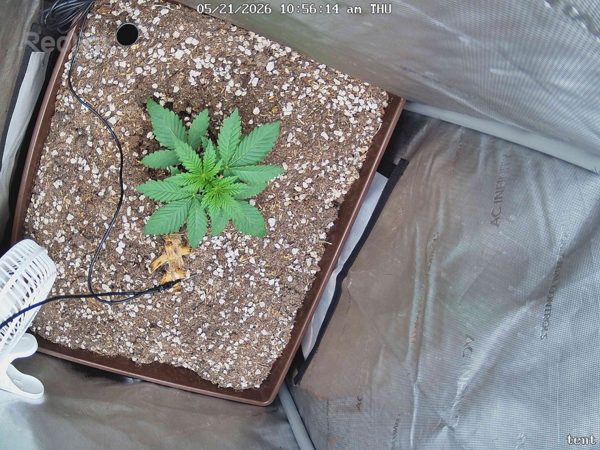

← All reports
May 21, 2026
Thu May 21, 2026 — 10:56 AM

Prognosis
Prognosis — Papaya Crush, day ~23 from germ
- What changed (~48 min apart): essentially identical — same node count, same fan-leaf spread, same posture. Too short a window to expect visible growth; this is a stability check, not a growth check.
- Color & posture: uniform deep green across all leaves, flat blades, no praying/curling, no drooping. Petioles holding leaves at a healthy slight upward angle — classic "happy" stance at 400 PPFD.
- Structure: still compact and stocky, no stretch, internodal spacing tight. 3–4 true-leaf sets visible with the next set developing at the apex. Lateral sites starting to define at lower nodes.
- Stress signs: none. No tacoing, no tip burn, no bleaching at the new growth, no interveinal yellowing, no edge crisp. The browned bit near the base is the old stump (per no-till) — ignore as expected.
- Soil: surface looks appropriately dry on top — consistent with last water on 5/19 and a 4–5 day cadence. No crust, no algae, no fungus gnats visible.
- Phase check: ~23 days from germ, ~16 days in tent. You're solidly in early veg and on the slightly-conservative-but-healthy side of the curve for a 2x2 / SF-2000 setup. Pace is fine for living soil — slower top growth now buys root mass.
- Light: plant is signaling it's handling 400 PPFD without complaint. Hold here for another 2–3 days of confirmation before considering a bump toward 450–500.
- Water: likely due tomorrow (5/22) or 5/23 — check by lifting the pot / finger 1–2" down rather than by calendar.
Next actions: no action needed — hold light at 400, watch for next watering window, keep logging.
Overall: textbook healthy early-veg plant, no stress, on track.